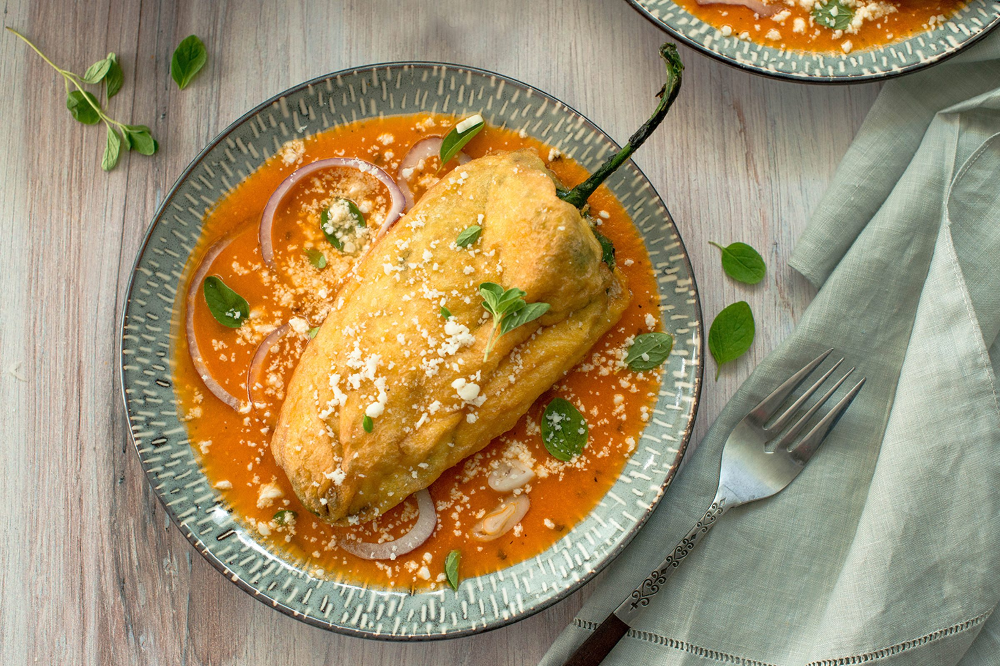

Chile Rellenos

An Authentic Recipe To Die For
Chile rellenos (or 'stuffed peppers' in English) are a traditional Mexican dish made from roasted poblano peppers stuffed with cheese, then coated in a fluffy egg batter and fried until golden brown.
They're smetimes served with a simple red or green salsa, or even wrapped in a tortilla with refried beans to make chile relleno burritos!
Ingredients
- 6 large poblano peppers
- 8 ounces Queso Fresco cheese
- 4 cups of oil
- 3 large eggs
- 1/2 cup all-purpose flour
- 1/2 teaspoon fine salt
Instructions
- Roast the peppers: Line a large baking sheet with aluminum foil and place poblano peppers on top. Set your oven rack directly underneath the broiler and turn the broiler on.
- Broil poblanos for 5 minutes, or until the skin is blackened and blistered. Carefully flip them over and broile for another 5 minutes.
- Remove them from the oven and loosely cover the baking sheet with aluminum foil or plastic wrap to keep in some of the heat and help them steam. Let them sit for 5 minutes.
- Peel the peppers: Peel and rub off as much of the loose skin on the peppers as possible. It doesn't have to be perfect, just as much as you can.
- Cut a small slit down the middle of the peppers with a knife. Remove seeds if you don't want the peppers to be too spicy. Poblano peppers aren't typically super spicy.
- Stuff the peppers: Carefully stuff the peppers with the cheese. Some of the peppers will be extra fragile because of the roasting process and may tear - that's okay. Once your done gently close the opening of the pepper and secure it shut with 1-3 toothpicks
- Prepare for frying: Heat the oil in a large skillet over medium-high heat. While oil is heating up, prepare the batter.
- Make the batter: Seperate the egg whites from the yolks into two seperate bowls - the whites into a large mixing bowl and the yolks into a small bowl. Using an electric hand mixer, beat the egg whites until stiff peaks form.
- While continuing to beat the egg whites on low, add in the egg yolks one at a time until all of them are fully mixed in. The batter should be light, fluffy and smooth.
- Coat the peppers with batter: Place the flour and salt into a separate shallow bowl or plate. Mix together to combine. Gently roll the stuffed peppers in the flour mixture, then give them a gentle tap to remove any excess. Then dip them in the egg batter and gently place them in the hot frying oil.
- Fry the chile rellenos: Fry the peppers for 3-5 minutes per side, until the batter is golden brown and crispy. Try not to overcrowd the peppers in the pan – I usually fry 2 at a time depending on the pan I'm using.
- Transfer the peppers to the lined baking sheet to drain off any excess oil.
- Serve: Immediately serve chile rellenos on a plate with some salsa, freshly chopped cilantro and some cotija cheese. (Don't forget to remove the toothpicks when you first cut into the peppers! You can try to remove them before serving onto plates, but I find it easier to remove them when you first cut into them.)